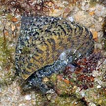
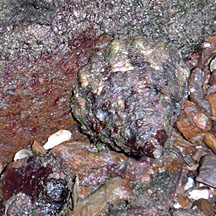

wildsingapore homepage
wildfactsheets homepage
wild shores of singapore blog
all animals
|
all plants
|
concepts
|
glossary
|
search
shelled snails
text index
|
photo index
Phylum
Mollusca
> Class
Gastropoda
Snails with top and turban shaped shells
How to tell them apart?
updated Oct 2016
Top or Turban?
These two kinds of snails are commonly encountered on our rocky shores. Here's how to tell them apart.
Top shell snail
Family Trochidae
Turban shell snail
Family Turbinidae
Shell is more pyramidal or top-shaped.
Shell has more distinct whorls, as in a turban.
Operculum is thin and made of a horn-like material.
Operculum is thick, rounded and chalky.
The foot of the living animal
is fringed with long tentacles.
The animal doesn't have
tentacles on the foot.
More comparisons
Dolphin shell
Spurred top shell snail
Ribbed turban snail

Spotted top shell snail

Giant top shell snail
links
|
references
|
about
|
email Ria
Spot errors? Have a question? Want to share your sightings?
email Ria
I'll be glad to hear from you!
wildfactsheets website©ria tan 2008